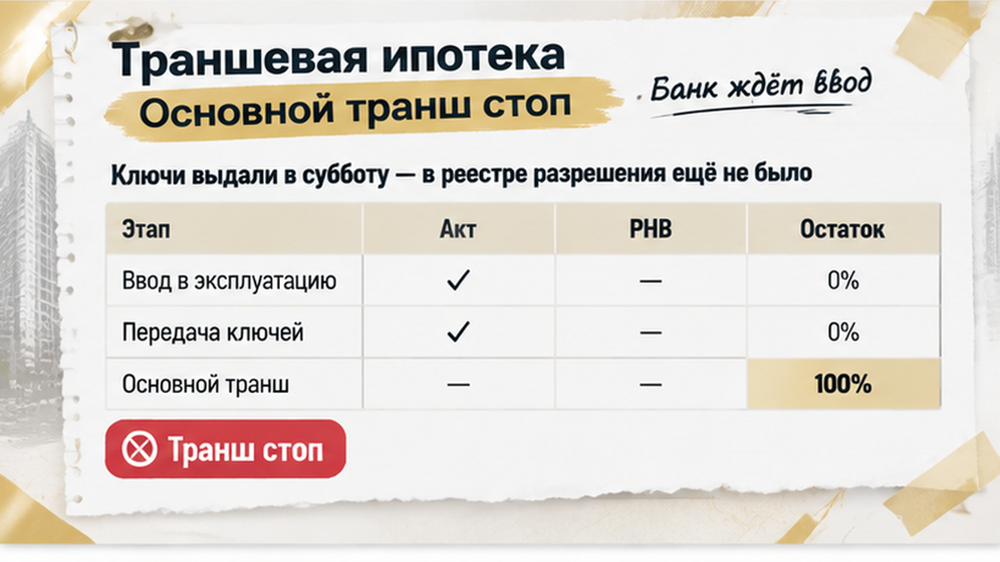
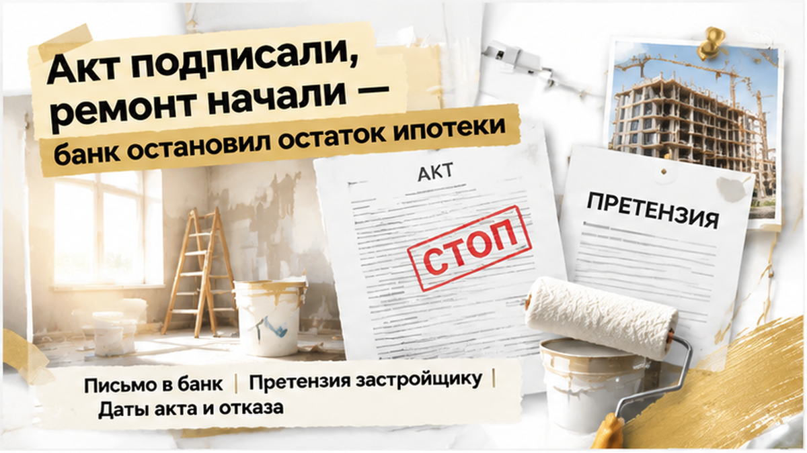
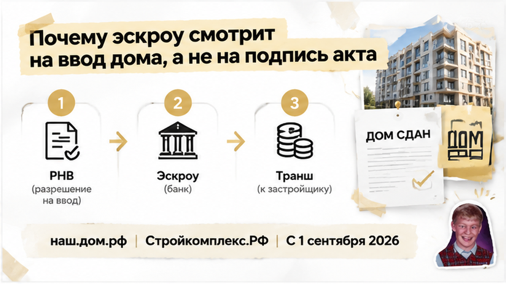
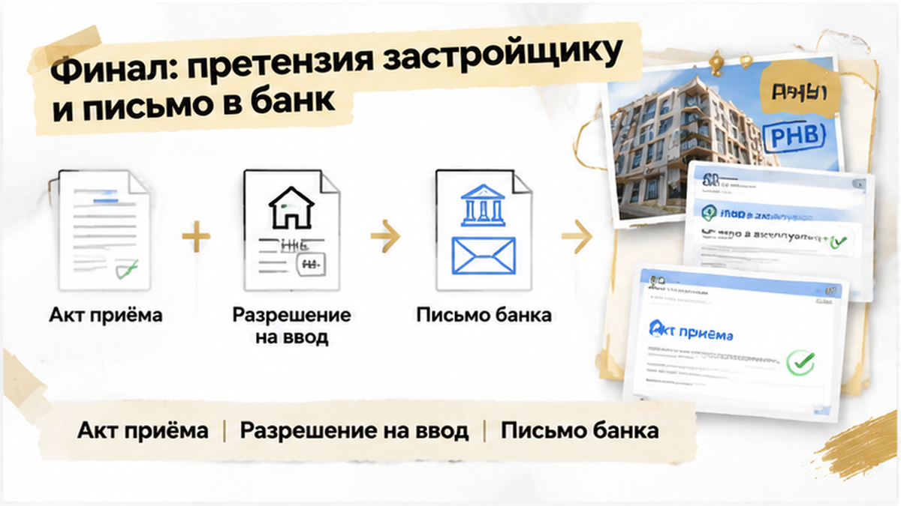
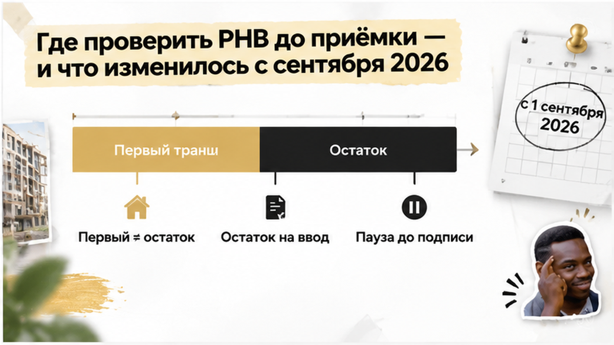
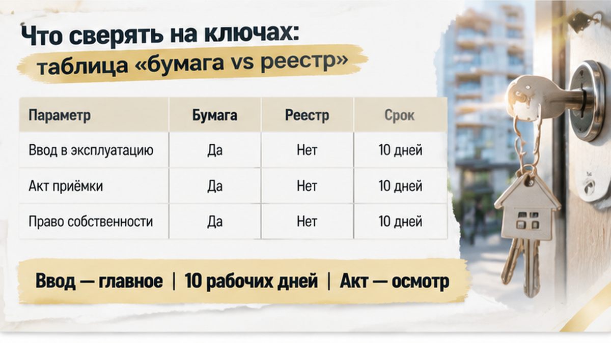

Через 2 дня после ключей банк остановил основной транш ипотеки: в реестре ещё не было разрешения на ввод дома. В субботу семья получила квартиру в тюменской новостройке. Первый небольшой платёж по ДДУ уже прошёл, поэтому покупатели считали вопрос с кредитом решённым. Менеджер показал акт, сослался на заселившихся соседей и поторопил с подписью. Семья подписала документ, начала ремонт — а разницу временно пришлось закрывать за свой счёт.
Я разбираю такие ситуации в Telegram и MAX: какие документы проверить до подписи, что запросить у застройщика и когда подключать банк.
Telegram и MAX — подписывайтесь, чтобы не пропустить разборы по новостройкам Тюмени.

Приёмка выглядела привычно: приглашение от застройщика, другие семьи, разговоры о заселении. Менеджер советовал не откладывать подпись — квартира готова, можно заезжать. Покупателям хотелось скорее начать ремонт, а не разбираться в статусе дома. Но акт приёма-передачи и разрешение на ввод — разные документы. Разрешение, сокращённо РНВ, подтверждает, что конкретный дом можно законно передавать дольщикам. По статье 8 закона № 214-ФЗ сначала получают его, затем передают квартиру. Готовый акт эту последовательность не меняет.
На дату приёмки записи о разрешении в открытых реестрах не было. Свет и заселившиеся соседи официального подтверждения не заменяют: проверять нужно именно свой дом и корпус, а не соседнюю очередь. С 1 сентября 2026 года одной бумажной копией проверка не ограничивается — подтверждением станет запись в электронном реестре «Стройкомплекс.РФ» и выписка из него. Дополнительные сведения можно сверить в ЕИСЖС на наш.дом.рф или dom.rf, а документы на сайте застройщика сопоставить с официальными данными.

У семьи была траншевая ипотека — деньги поступали частями. Первый небольшой транш банк перечислил после регистрации ДДУ, а основная сумма должна была попасть на эскроу ближе к вводу. Поэтому прошедший платёж создавал ощущение, что покупка идёт по плану. Но для остатка действовало отдельное условие: подтверждённый ввод дома. Подпись покупателя под актом сама по себе перевод не запускала. Банк остановил его не из-за качества квартиры и не отказался от кредита — на нужную дату не было обязательного документа.
Начавшийся ремонт добавил расходы, которых семья не планировала: кредитная схема ещё не завершилась, и разницу временно закрыли собственными средствами. Слова застройщика «квартира передана, пользуйтесь» не обязывали банк перечислить остаток. В такой ситуации нужно письменно уведомить банк и запросить объяснение: что остановило платёж, каких документов не хватает и как возобновить перевод. Ответ должен опираться на условия конкретного кредита, поскольку от них зависят дальнейшие платежи и последствия задержки.

Эскроу — не обычный счёт, доступный застройщику после любой подписи. Деньги раскрываются, когда выполнены условия закона и договора. Главным подтверждением для дома остаётся ввод в эксплуатацию. По части 6 статьи 15.5 закона № 214-ФЗ срок перечисления застройщику — не позднее десяти рабочих дней после представления разрешения или сведений о нём в ЕИСЖС. Акт нужен для другого: зафиксировать осмотр, недостатки и передачу конкретной квартиры, тогда как разрешение подтверждает ввод всего дома.
Поэтому получение квартиры и движение денег могут не совпасть по времени. Покупатель уже получил доступ, а основной транш ещё не поступил на эскроу. Для банка важен официальный статус дома — не возможность завезти стройматериалы. За подписью в акте не следует автоматическое выполнение всех условий кредита, как и первый перечисленный транш не подтверждает готовность банка отправить остаток. Эти этапы проверяют отдельно — по документам дома и кредитному договору.

Устные обещания менеджера проблему не решили — понадобились письменные обращения. В банк направили письмо с датами акта и отказа: попросили назвать причину остановки, недостающий документ, способ его подачи и срок возобновления перевода после появления подтверждения. Застройщику отправили претензию: покупателей пригласили на приёмку до подтверждённого ввода. Запросили копию разрешения или выписку из реестра и объяснение, почему квартиру предложили принять раньше.
Претензия не запускает перевод денег — она сохраняет историю проблемы: когда подписали акт, узнали об отсутствии подтверждения и какие расходы возникли. Самостоятельно прекращать выплаты по ипотеке не стоит. Порядок платежей, требования к страховке и оценке определяет кредитный договор, включая сроки передачи документов. Всё это лучше уточнить письменно, особенно при изменении ежемесячной нагрузки: банк автоматически не простит разницу между платежами.
Ранняя подпись не закрывает возможность предъявить требования застройщику. По статье 8 закона № 214-ФЗ квартиру передают после получения разрешения на ввод: сначала подтверждают готовность дома, затем оформляют передачу. Что требовать за нарушение, нужно решать по документам и датам. Неустойка, расторжение ДДУ или возврат денег требуют отдельной оценки, а само обращение ещё не означает, что спор решён в пользу покупателя.
Не путайте этот сценарий с задержкой передачи при уже внесённых деньгах. О ней я писал в материале о переносе ключей при уже размещённых на эскроу деньгах. Там средства находятся на счёте, а покупатель ждёт квартиру. Здесь не завершён именно перевод основной части кредита — поэтому и вопросы банку другие.
Ключи на руках, а ипотека не дошла: подписали бы акт без разрешения на ввод или ждали?

Перед актом нужна проверяемая запись — не фраза менеджера «всё готово». Сведения о доме смотрите в ЕИСЖС на портале наш.дом.рф, а разрешение с сайта застройщика сопоставляйте с официальными данными. Проверяйте адрес, корпус и конкретный объект из вашего ДДУ: готовность соседнего дома, даже в том же жилом комплексе, ничего не говорит о вашем.
С 1 сентября 2026 года в центре процедуры будет электронная запись. Подтверждением станет запись в реестре «Стройкомплекс.РФ» и выписка из него. Дополнительные сведения можно сверять на наш.дом.рф или dom.rf. Бумажные разрешения, выданные раньше, действуют до даты, указанной в документе. В переходный период учитывайте дату документа и способ подтверждения: одна копия на сайте компании не заменяет сверку.
Проверяйте РНВ именно в день приёмки. Проверка за несколько недель до встречи не заменяет актуальную. Между приглашением и подписью сведения могут измениться, а старый скриншот не подтверждает сегодняшний статус дома. Если записи нет — запросите реквизиты разрешения или выписку, сверьте их с ДДУ, сохраните дату и время проверки. Переписку, приглашение и ответ компании тоже оставьте у себя: это история ваших действий, а не просто отказ от приёмки.
Заранее спросите банк, какой документ он примет для основного транша, куда его отправлять и что делать после появления записи. Лучше узнать требования до встречи с менеджером, а не после подписи. Акт понадобится для оформления передачи, но подтверждение ввода он не подменяет. При траншевой ипотеке это особенно важно: первый платёж уже прошёл, а основная сумма зависит от отдельного условия.
Не смешивайте разные причины остановки сделки. Одобренный кредит не всегда означает, что эскроу уже открыт — этот механизм разобран в материале об одобренной семейной ипотеке и неоткрытом эскроу. Повышение ставки перед ДДУ — другая история, описанная в разборе о выросшем платеже на финише сделки. Здесь вопрос именно в подтверждении ввода дома.

На приёмке сверяйте папку менеджера с официальными сведениями именно по дому и корпусу из ДДУ. Формулировка «весь жилой комплекс сдан» не подходит: у соседнего корпуса может быть другой статус.
| Что смотрим | Что это подтверждает | Где может быть ошибка |
|---|---|---|
| Акт приёма-передачи | Состояние квартиры, замечания и факт передачи | Акт подписывают раньше, чем появляется законное основание для передачи |
| Разрешение на ввод | Документ уполномоченного органа о вводе дома | В документе указан другой корпус, адрес или дата. Старые бумажные разрешения действуют до даты в самом документе |
| «Стройкомплекс.РФ» | Запись о вводе по новой реестровой модели | В реестре нет именно вашего корпуса либо данные не совпадают с ДДУ |
| наш.дом.рф / dom.rf | Сведения о проекте и разрешении | Проверяют карточку соседней очереди или другого дома |
| Сайт застройщика | Копии документов и ссылки на них | Информация на сайте устарела или не подтверждается официальным реестром |
| Письмо банка | Список документов для основного транша | Покупатель не уточнил, что именно банк примет и в какой срок |
Посмотрите данные до осмотра и повторите проверку в день подписи. Сохраните скриншоты с датой, переписку и приглашение. Если подтверждение появилось перед актом, передайте его банку и уточните, нужен ли отдельный запрос на перевод.
Причиной остановки денег может быть и смена компании-застройщика. Покупателю присылают новый ДДУ, а банк не открывает счёт. Вот разбор случая, когда после нового ДДУ эскроу не открылся. Обстоятельства отличаются, но за устным обещанием всё равно должен стоять документ, который принимает банк.
Первый транш и основной остаток относятся к разным этапам сделки. Небольшую часть банк перечисляет после регистрации ДДУ, а основную сумму — ближе к вводу при выполнении условий кредита. Первый платёж не означает завершения схемы: перевод остатка на эскроу и раскрытие счёта — разные операции, причём для раскрытия важно подтверждение ввода, а не подпись покупателя.
Расходы на квартиру при этом уже могут начаться. Семья обслуживает первый транш и закрывает разницу за свой счёт. Точные начисления смотрите в кредитном договоре, а за письменным объяснением обращайтесь в банк.
Для сравнения — случай, когда ключи задержали при уже размещённых средствах. Там деньги уже на эскроу, здесь основной транш ещё не поступил. До акта уточните банковский пакет документов и проверьте ввод. Пока подтверждения нет, безопаснее приостановить подписание, получить письменную позицию и отложить ремонт: он не устраняет проблему с документами.
Разбираю сделки по новостройкам Тюмени в Telegram The Риэлтор и MAX Святослав Шакин. Подписывайтесь: там — документы и реальные узкие места сделки, которые лучше увидеть до денег, акта и ремонта.
Главная точка контроля — до подписи, пока у покупателя остаётся выбор. Если спор уже возник, начните с письменных обращений обеим сторонам. Не закрывайте остаток молча, без объяснения причин и условий. Это не повод отказываться от новостроек — это повод взять паузу, сохранить деньги и спокойно разобраться.